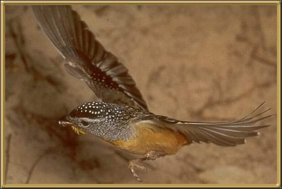

We have pairs of these birds in our garden, but they are hard to see as they fly and hunt in the treetops. They dig nests in tunnels in earth banks, hanging baskets or piles of mulch. They are cheeky little birds, with white spots and a bright red rump. 9.5cm (3.5 inches). Other varieties - striated pardalote, secure; and 40 spotted pardalote - endangered. Also red-browed pardalote and yellow-rumped pardalote.
Photographer: unknown